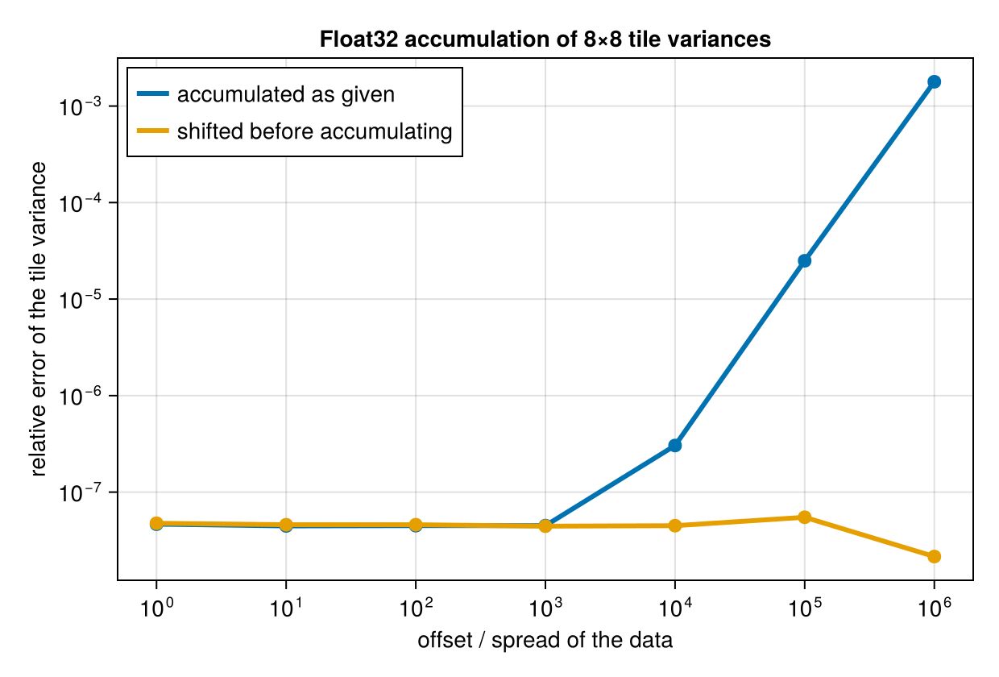

Numerics
What is computed
- Single observations enter through a Welford lift.
- Two accumulators combine with the Chan–Golub–LeVeque merge for
(n, mean, M2), and Pébay's forms for covariance and central moments to order four. - Combining many at once uses the weighted-mean form —
mean = Σnᵢμᵢ / Σnᵢ,M2 = ΣM2ᵢ + Σnᵢ(μᵢ - μ)²— neverΣx² - (Σx)²/n. - A base tile's second moments are computed in two passes over the box: the mean, then the centred sum. The box is in cache, so this is two passes over registers.
That combination gives error O(ε‖x - μ‖²) within a tile, which is the best attainable without compensated summation.
The limit that remains
Merging is not the weak link. Even with a perfect tree, the running means are stored at the data's own magnitude, so a relative M2 error of about 0.3 · ulp(|mean|) / scale is inherent. Measured with n = 2×10⁴, spread 10⁻³:
| offset | relative M2 error |
|---|---|
| 0 | ~1e-16 |
| 1e4 | ≲ 1e-9 |
| 1e8 | 3e-6 to 1e-5 |
Sequential and pairwise merging give the same figure; tree order is for parallelism, not accuracy.
Shifted accumulation
The fix is to accumulate statistics of x - s for one shift s per field per call. Central moments are shift-invariant and means simply move by s, so unshift restores the reported values at finalize; by Sterbenz the subtraction itself is exact when s is near the data.
This is what lets a Float32 input accumulate in Float32. Measured per-tile variance against a BigFloat reference, 8×8 tiles, spread 10⁻³:
| mean / std | Float64 accumulation | Float32, unshifted | Float32, shifted |
|---|---|---|---|
| 0 | 4e-16 | 2.1e-7 | 1.8e-7 |
| 1e5 | 0 | 2.4e-4 | 2.5e-7 |
| 1e7 | 0 | 0.178 | 5.8e-8 |

The shift is global rather than per tile, so all accumulators still compose, and it is recomputed on every call from a strided sample of at most SHIFT_SAMPLES elements — a prepared handle re-centres on each new input.
shift = :auto (the default) shifts exactly where it buys something: a floating input whose accumulation would otherwise have to widen. Float64 input is already well conditioned and is left alone. shift = true asks for it regardless, false refuses, and a number or tuple pins it.
Accumulators of raw, uncentered moments (SumAcc, ProductSumAcc, RawMomentsAcc) report shiftable = false: un-shifting them would need quantities they do not carry, and they are well conditioned without it.
Element types
accumulation_eltype widens Float16 → Float32, Float32 → Float64, integers and Bool → Float64, and leaves wider floats alone — but only when the request is not shifting. With a shift, a Float32 input accumulates in Float32, which is both faster and, at a large offset, far more accurate.
Results narrow exactly once, at finalize, to result_eltype — the input eltype for sums and extremes, a float for means, moments and correlations. acc_eltype and out_eltype override both.
Windows with nothing in them
A window can hold no observations once non-finite ones are skipped. Its mean and variance are then NaN, not zero: the corrected denominator is clamped at zero so the division is 0/0, and the mean reports NaN directly. A sum of no observations is 0, which is correct.